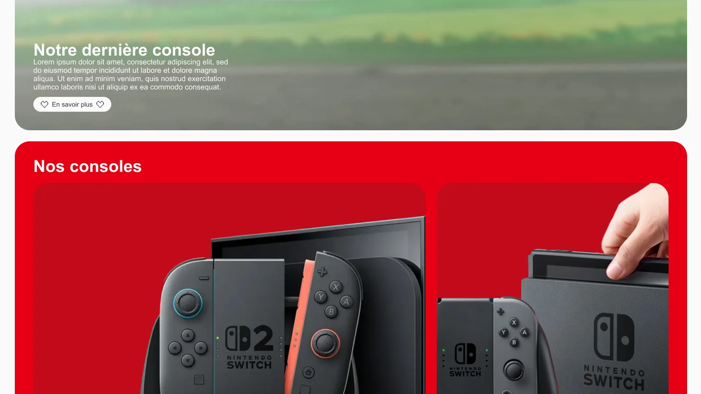
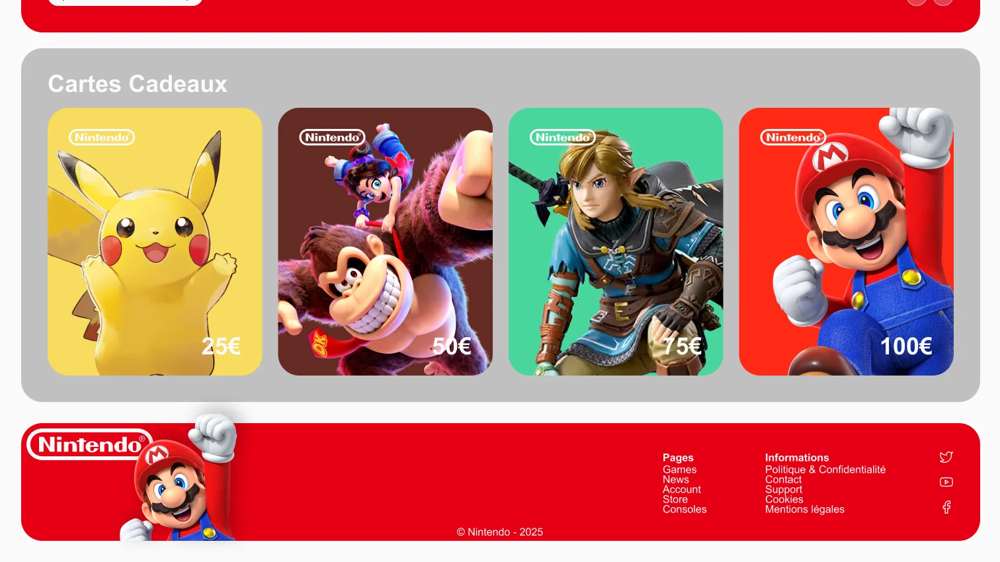
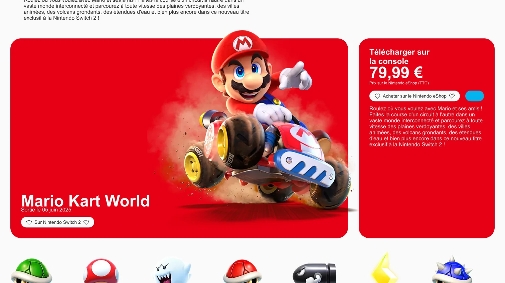

Repenser l'expérience web pour accéder rapidement aux jeux, aux offres et aux contenus clés de la marque. L'objectif : rendre l'offre lisible et accélérer l'accès aux actions principales, sur desktop comme sur mobile.
contexte.objectifs
L'écosystème Nintendo réunit une offre riche, des profils utilisateurs variés et de nombreux points d'entrée. Le défi : clarifier la navigation sans perdre l'identité visuelle forte de la marque.

parcours.prioritaires
Le travail s'est concentré sur les parcours qui comptent : découvrir un jeu, le trouver dans le catalogue, puis l'acheter sans détour.
- 01Accueil
- 02Catalogue
- 03Fiche produit
- 04Panier
- 05Paiement


interface.design
La hiérarchie des contenus a été revue et les composants unifiés, pour une expérience plus directe : moins de détours entre l'envie d'un jeu et sa commande.
